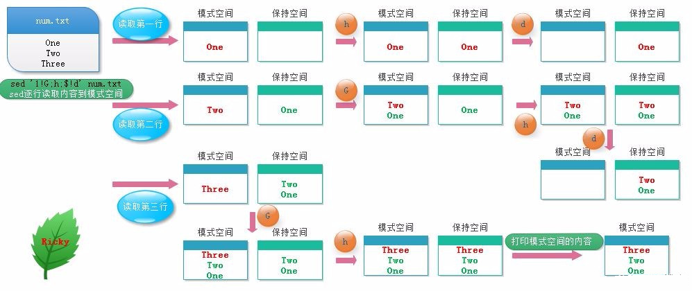

7.3.3. shell三剑客grep sed awk
awk、grep、sed是linux操作文件的三大利器，合称文本三剑客。grep适合单纯的文件查找或者匹配文本，sed更适合编辑匹配到的文本，awk适合格式化文本，对文本进行复杂的格式处理
7.3.3.1. grep
grep用于过滤搜索特定字符，可使用正则表达式配合使用.搜索成功返回0,不成功返回1,文件不存在则返回2
命令格式
grep [option] pattern file
命令参数如下
-A<显示行数>: 除了显示符合匹配样式的那一行之外，并显示该行之后的内容
-B<显示行数>: 除了显示符合匹配样式的那一行之外，并显示该行之前的内容
-C<显示行数>: 除了显示符合匹配样式的那一行之外，并显示该行前后的内容
-c: 统计匹配的行数
-e: 实现多个选项间的逻辑or关系
-E: 扩展的正则表达式
-f FILE: 从file获取pattern匹配
-F: 相当于fgrep
-i –igonre-case : 忽略大小写的区别
-n: 显示匹配的行号
-o: 仅显示匹配到的字符串
-q: 静默模式,不输出任何信息
-s: 不显示错误信息
-v: 显示不被pattern匹配到的行
-w: 匹配整个单词
7.3.3.2. sed
sed是一种流编辑器，它一次处理一行内容，处理时把当前处理的行存储在临时缓冲区中，称为”模式空间”，接着用sed命令处理缓冲区中的内容，处理完成后，把缓冲区中的内容送往屏幕， 然后读入下一行，执行下一个循环。文件内容并没有改变，除非你使用重定向存储输出或者-i
7.3.3.2.1. sed命令解释
命令格式
se [options] '[地址定界] command' file(s)
常用选项options
-n:不输出模式空间内容到屏幕，即不自动打印，只打印匹配到的行
-e:多点编辑，对每行处理时，可以有多个script
-f:把script写到文件当中，在执行sed时-f指定文件路径,如果是多个script，换行写
-r:支持扩展的正则表达式
-i:直接将处理结果写入文件
i.bak:在将处理的结果写入文件之前备份一份
地址定界
不给地址：对全文进行处理
单地址:
#:指定的行
/pattern/:被此模式能够匹配到的每一行
地址范围:
#,#
#,+#
/pat1/,/pat2/
,/pat1/
~:步进
sed -n ‘1~2p’ #只打印奇数行(1~2从第一行,一次加2行)
sed -n ‘2~2p’ #只打印偶数行
编辑命令commmand
d:删除模式空间匹配的行，并立即启用下一轮循环
p:打印当前模式空间内容,追加到默认输出之后
a:在指定行后面追加文本,支持使用n实现多行追加
i:在前面插入文件，支持使用n实现多行追加
c:替换行为单行或者多行文本，支持使用n实现多行追加
w:保存模式匹配到的行到指定文件
r:读取指定文件的文本到模式空间中匹配到的行后
=:为模式空间中的行打印行号
!:为模式空间中匹配行取反处理
s///:查找替换,支持使用其他分隔符，如s@@@,s###
7.3.3.2.2. sed用法演示
常用选项options演示
cat demo
aaa
bbb
AABBCCDD
sed "/aaa/p" demo #匹配到的行会打印一遍，没有匹配到的行也会打印
aaa
aaa
bbb
AABBCCDD
sed -n "/aaa/p" demo #-n不显示没匹配的行
aaa
sed -e "s/a/A/" -e "s/b/B/" demo #-e多点编辑
Aaa
Bbb
AABBCCDD
cat sedscript.txt
s/A/a/g
sed -f sedscript.txt demo
aaa
bbb
aaBBCCDD
地址界定演示
sed -n "p" demo #不指定行，打印全文
aaa
bbb
AABBCCDD
sed "2s/b/B/g" demo #替换第2行的b->B
aaa
BBB
AABBCCDD
sed -n "1,2p" demo #打印1-2行
aaa
bbb
sed -n "/aaa/,/DD/p" demo
aaa
bbb
AABBCCDD
sed -n "2,/DD/p" demo
bbb
AABBCCDD
sed "1~2s/[aA]/E/g" demo #将奇数行的a或A替换为E
EEE
bbb
EEBBCCDD
编辑命令command演示
sed "2d" demo #删除第2行
aaa
AABBCCDD
sed -n "2p" demo #打印第二行
sed "2a123" demo #在第二行后面加123
aaa
bbb
123
AABBCCDD
sed "1i123" demo #在第一行前面加123
sed "3c123\n456" #替换第三行的内容
aaa
bbb
123
456
sed -n "3w/root/demo3" demo #保存第三行的内容到demo3文件中
sed "1r/root/demo3" demo #读取demo3的内容到第1行后
sed -n "=" demo #打印行号
1
2
3
sed -n "2!p" #打印除了第2行的内容
sed 's@[a-z]@\u&@g' demo #将全文的小写字母替换为大写字母
7.3.3.2.3. sed高级编辑命令
格式
h:把模式空间中的内容覆盖至保持空间中
H:把模式空间中的内容追加至保持空间中
g:从保持空间取出数据覆盖至模式空间中
G:从保持空间取出数据追加至模式空间中
x:把模式空间中的内容与保持空间中的内容进行互换
n:读取匹配到的行的下一行覆盖至模式空间
N:读取匹配到的行的下一行追加至模式空间
d:删除模式空间中的行
D:当前模式空间开端至n的内容(不再传至标准输出)，放弃之后的命令，但是对剩余模式空间重新执行sed
案例
cat num.txt
One
Two
Three
sed '1!G;h;$!d' num
Three
Two
One
示意图如下所示:

备注
保持空间是模式空间一个临时存放数据的缓冲区，协助模式空间进行数据处理
演示
seq 99 | sed -n "n;p" #打印偶数行
2
4
6
8
seq 9 | sed "1!G;h;$!d" #倒序显示
seq 9 | sed 'H;n;d' #显示奇数行
seq 9 | sed "N:D" #显示最后一行
seq 9 | sed "G" #每行之间加空行
seq 9 | sed "g" #把每行内容替换为空行
7.3.3.3. awk
awk是一种编程语言，用于在linux/unix下对文本和数据进行处理,数据可以来自标准输入(stdin)、一个或者多个文件或其他命令的输出。它支持用户自定义函数和动态正则表达式等先进功能， 可以在命令行使用也可以作为脚本使用
语法
awk [options] 'program' var=value file...
awk [options] -f programfile var=value file...
awk [options] 'BEGIN{ action;... } pattern{ action;... } END{ actions;.. }' file...
常用命令选项
-F fs:fs指定输入分隔符,fs可以是字符串或正则表达式
-v var=value:赋值一个用户定义变量，将外部变量传递给awk
-f scriptfile:从脚本文件中读取awk命令
7.3.3.3.1. awk变量
变量:内置变量和自定义变量,每个变量前加-v命令选项
7.3.3.3.1.1. 内置变量
格式
FS:输入字段分隔符,默认为空白字符
OFS:输出字段分隔符，默认为空白字符
RS:输入记录分隔符，指定输入时的换行符，原换行符仍有效
ORS:输出记录分隔符，输出时用指定符号代替换行符
NF:字段数量，共有多少字段，$NF引用最后一列
NR:行号，后可跟多个文件，第二个文件行号继续从第一个文件最后行号开始
FNR:各文件分别计数，行号
FILENAME:当前文件名
ARGC:命令行参数个数
ARGV:数组，保存的是命令行所给定的各参数，查看参数
演示
cat awkdemo
hello:world
linux:redhat:lalala:hahaha
along:love:youou
awk -v FS=':' '{print $1,$2}' awkdemo #FS指定输入分隔符
awk -v FS=':' OFS="----" '{print $1,$2}' awkdemo #OFS指定输出分隔符
awk -v RS=':' '{print $1,$2}' awkdemo
awk -F: '{print NF}' awkdemo
awk -F: '{print $(NF-1)' awkdemo #显示倒数第2列
awk END'{print NR} awkdemo #统计行号
7.3.3.3.1.2. 自定义变量
自定义变量区分大小写
-v var=value
awk v name="ywg" -F: 'print name":"$0' awkdemo
7.3.3.3.2. pintf命令
格式：
pritnf "FORMAT", item1,item2,...
必须指定FORMAT
不会自动换行，需要显示给出换行控制符,n
FORMAT中需要分别为后面每个item指定格式符
格式符：与item一一对应
%c:显示字符的ADCII码
%d,%i:显示十进制整数
%e,%E:显示科学计数法数值
%f:显示为浮点数,小数, %5.1f带整数、小数，整数5位小数1位
%g,%G:以科学计数法或浮点形式显示数值
%s:显示字符串
%u:无符号整数
%%:显示%自身
awk -F: '{printf "%20s----%u\n",$1,$3}' /etc/passwd
awk -F: '{printf "%-20s----%-u\n",$1,$3}' /etc/passwd #使用-进行左对齐
7.3.3.3.3. 操作符
格式
算数操作符
x+y,x-y,x*y,x/y,x^y,x%y
-x:转换为负数
+x:转换为数值
字符串操作符：没有符号的操作符，字符串连接
赋值操作符：
=,+=,-=,*=,/=,%=,^=
++,–
比较操作符
==,!=,>,>=,<=
模式匹配符:~:左边和右边是否匹配包含 !~:是否不匹配
逻辑操作符:&& || !
函数调用:function_name(argu1,argu2,…)
演示
模式匹配
df -h | awk -F: '$0 ~ /^\/dev/' #查询以/dev开头的磁盘信息
df -h | awk '$0 ~ /^\/dev/{print $(NF-1)"----"$1}' #只显示磁盘情况和磁盘名
df -h | awk '/^\/dev/{print $(NF-1)"---"$1}' | awk -F% '$1 > 40'
逻辑操作符
awk -F: '$3>0 && $3<=1000 {print $1,$3}' /etc/passwd
awk -F: '!($0 ~ /bash$/) {print $1,$3}' /etc/passwd
7.3.3.3.4. awk pattern匹配部分
根据pattern条件，过滤匹配的行，再做处理
如果未指定：空模式，匹配每一行
/regular expression/: 仅处理能够模式匹配到的行,正则，需要用//括起来
relational expression: 关系表达式,结果为真才会被处理
真:结果为非0值，非空字符串
假：结果为空字符串或0值
line ranges:行范围
startline(起始行),endline(结束行):/part1/,/part2/ 不支持直接给出数字，可以有多段，中间可以有间隔
BEGIN/END 模式
BEGIN{}: 仅在开始处理文件中的文本之前执行一次
END{}: 仅在文本处理完成之后执行
演示
awk -F: '/^h/,/^a/{print $1}' awkdemo.txt
awk -F: 'BEGIN{print "第一列"}{print $1} END{print "结束"}' awkdemo.txt
7.3.3.3.5. awk高阶用法
控制语句之if else判断
if(condition){statement;...}[else statement] #双分支
if(condition1){statement1;...}else if(condition2)else{statement3} #多分支
使用场景:对awk取得的整行或某个字段做条件判断
awk -F: '{if($3>10 && $3<1000)print $1,$3}' /etc/passwd
awk -F: '{if($NF=="/bin/bash") print $1,$NF}' /etc/passwd
awk -F: '{if($3>==1000) {printf "commmon user: %s\n",$1} else{printf "root or sysuser: %s\n",$1}}' /etc/passwd
控制语句之while循环
while(condition){statement;...}
注:条件为真，进入循环；条件为假，退出循环
awk -F: '/^along/{i=1;while(i<=NF){print $i,length($i);i++}}' awkdemo.txt
控制语句之do while循环
do {statement;..}while(condition)
注:无论真假，至少会执行一次
awk 'BEGIN{sum=0;i=1;do{sum+=i;i++}while(i<1000);print sum}'
控制语句之for循环
for(expr1;expr2;expr3) {statement;...}
特殊用法:遍历数组中的元素
for(var in array) {for-body}
awk -F: '{for(i=1;i<=NF;i++) {print $i,length($i)}}' awkdemo.txt
7.3.3.3.6. 字符串处理
rand()返回0到1之间一个随机数，需要一个种子srand()，没有种子，一直输出0.237788
awk 'BEGIN{srand(); print rand()}'
awk 'BEGIN{srand()} {printf int(rand()*100%50)}' #取0-50的随机数
字符串处理:
length([s]):返回指定字符串的长度
sub(r,s,[t]):对t字符串进行搜索r表示的模式匹配的内容，并将第一个匹配的内容替换为s
gsub(r,s,[t]):对t字符串进行搜索r表示的模式匹配的内容，并将全部匹配的内容替换为s
split(s,array,[r]):以r为分割符切割字符串s并将切割后的结果保存至array所表示的数组中，第一个索引值为1第二个为2
echo "2008:08:08 08:08:08" | awk 'sub(/:/,"-",$1)'
echo "2008:08:08 08:08:08" | awk 'gsub(/:/,"-",$1)'
echo "2008:08:08 08:08:08" | awk '{split($0,i,":")}END{for(n in i){print n,i[n]}}'
7.3.3.3.7. awk自定义函数
格式：和bash区别:定义函数中需要加参数，return 返回值不是$?，是相当于echo输出
function name (parm1, parm2, ...)
{
statements
return expression
}
cat fun.awk
function max(v1,v2) {
v1>v2?var=v1:var=v2
return var
}
BEGIN{a=3;b=2;printf max(a,b)}
awk -f fun.awk
awk可以借助system调用shell命令
awk BEGIN'{system("hostname")}'
awk程序也可以写成脚本，直接调用或执行
cat f1.awk
#!/bin/awk -f
{if($3 >= 1000)print $1,$3}
chmod +x f1.awk
./f1.awk -F: /etc/passwd
向awk脚本传递参数
awkfile var=value var2=value2 ... inputfile
备注
在BEGIN过程中不可用，直到首行输入完成以后变量才可使用，可以通过-v参数让awk在BEGIN之前得到变量的值，命令行中每指定一个变量都需要一个-v